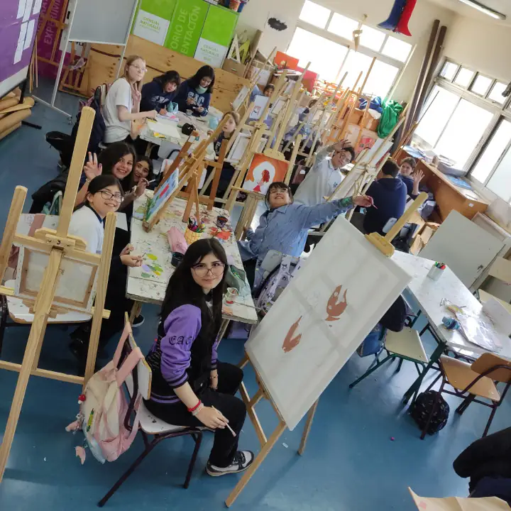

Horarios del Taller
Martes (5º a 8º Básico)
16:00 a 17:00 hrs.

Sobre el Taller
El Taller de Pintura de la Escuela de Artes y Cultura de Osorno es un espacio de creación libre y formación técnica donde los estudiantes exploran el mundo de las artes visuales. Bajo la guía del profesor Julio Del Rio, este taller invita a los alumnos a descubrir su propio lenguaje artístico a través del dominio del color, la línea y la composición.
Dirigido a estudiantes de 5º a 8º año básico, el taller aborda diversas técnicas pictóricas, desde el dibujo básico hasta la pintura experimental, permitiendo que cada participante desarrolle su sensibilidad estética y capacidad de observación. En este ambiente creativo, se fomenta el pensamiento crítico, la paciencia y la expresión de emociones a través de la obra visual.
Más que aprender a pintar figuras, este taller busca que los estudiantes comprendan el arte como una herramienta de comunicación y autoconocimiento. Los trabajos realizados forman parte de exposiciones escolares, permitiendo que la comunidad educativa aprecie el talento y la dedicación de nuestros jóvenes artistas.
¿Qué aprenderás?
Teoría del Color
Aprende sobre mezclas, contrastes y la psicología del color para dar vida a tus obras.
Técnicas de Dibujo
Domina el trazo, la perspectiva y el encaje como base fundamental para la pintura.
Manejo de Materiales
Conoce y utiliza diversos tipos de pinceles, soportes y pigmentos.
Observación y Composición
Desarrolla la capacidad de observar el entorno y organizar elementos visuales con armonía.
Expresión Personal
Descubre tu propio estilo y utiliza el arte como un medio de expresión emocional.
Historia del Arte
Conoce a grandes maestros y movimientos artísticos que inspiran la creación actual.
Beneficios de la Pintura
La expresión artística fomenta el desarrollo integral de los jóvenes.
Creatividad
Potencia la capacidad de imaginar soluciones y ver el mundo desde perspectivas únicas.
Paciencia
El proceso artístico enseña a valorar el tiempo y la dedicación en cada detalle.
Bienestar
Pintar reduce el estrés y proporciona un espacio de relajación y concentración plena.
Concentración
Mantiene la mente enfocada en una tarea creativa, mejorando la atención sostenida.
¿Te apasiona el arte?
Si quieres inscribirte en el Taller de Pintura o realizar consultas técnicas, contacta al profesor Julio Del Rio.